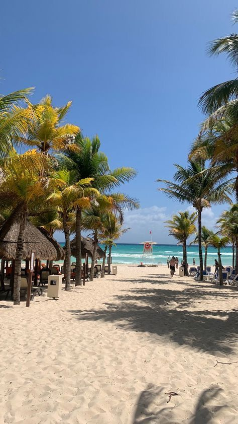

Isla Mujeres
Situada en el Caribe mexicano, es un paraíso tropical conocido por sus playas de aguas cristalinas
y su ambiente relajado. Con opciones para practicar snorkel y buceo, es ideal para los amantes del mar.
La isla también ofrece una rica cultura local, mercados artesanales y restaurantes con mariscos frescos.
Un destino perfecto para escapar del bullicio y disfrutar de la tranquilidad caribeña.
Los encantos de París
París es una ciudad llena de historia, arte y cultura,
famosa por sus monumentos como la Torre Eiffel y el Museo del Louvre.
Sus calles encantadoras, cafés al aire libre y hermosos jardines hacen de ella un destino único.
Con una atmósfera romántica, París cautiva a sus visitantes con su arquitectura, gastronomía y vida vibrante.
Es un lugar que deja una huella duradera y es ideal para quienes buscan belleza y sofisticación.

Aventura en las Sierras cordobesas
El Durazno, ubicado en la provincia de Córdoba, Argentina,
es un encantador destino que combina belleza natural con tranquilidad.
Rodeado de sierras y paisajes verdes, es ideal para quienes buscan
desconectar de la rutina y disfrutar del aire libre.
La localidad ofrece diversas actividades al aire libre, como senderismo
y paseos por sus montañas. Además, su clima templado y su gente amable
hacen de El Durazno un lugar perfecto para unas vacaciones relajantes en contacto con la naturaleza.